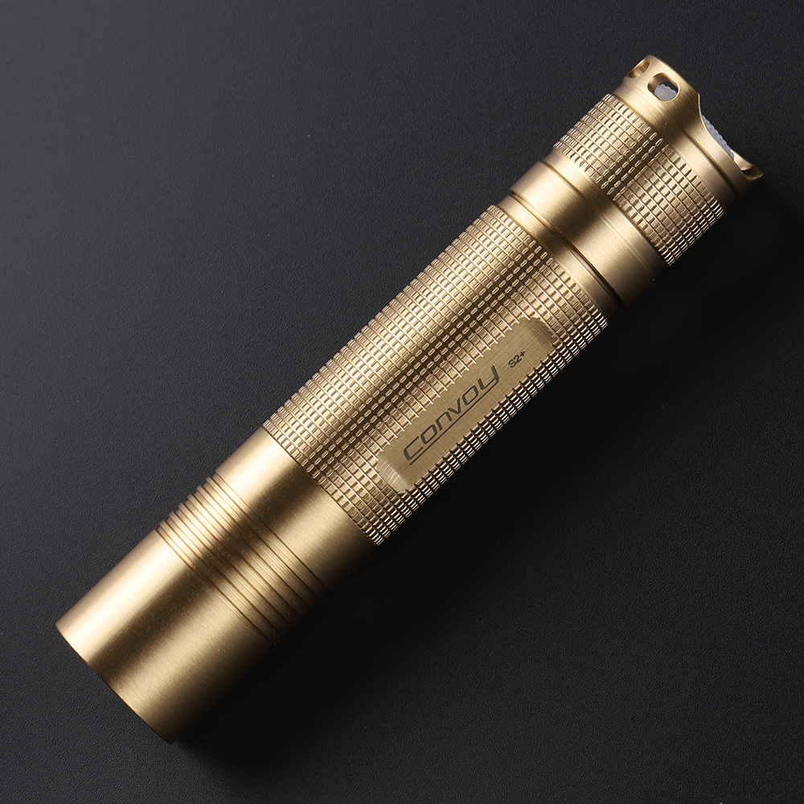
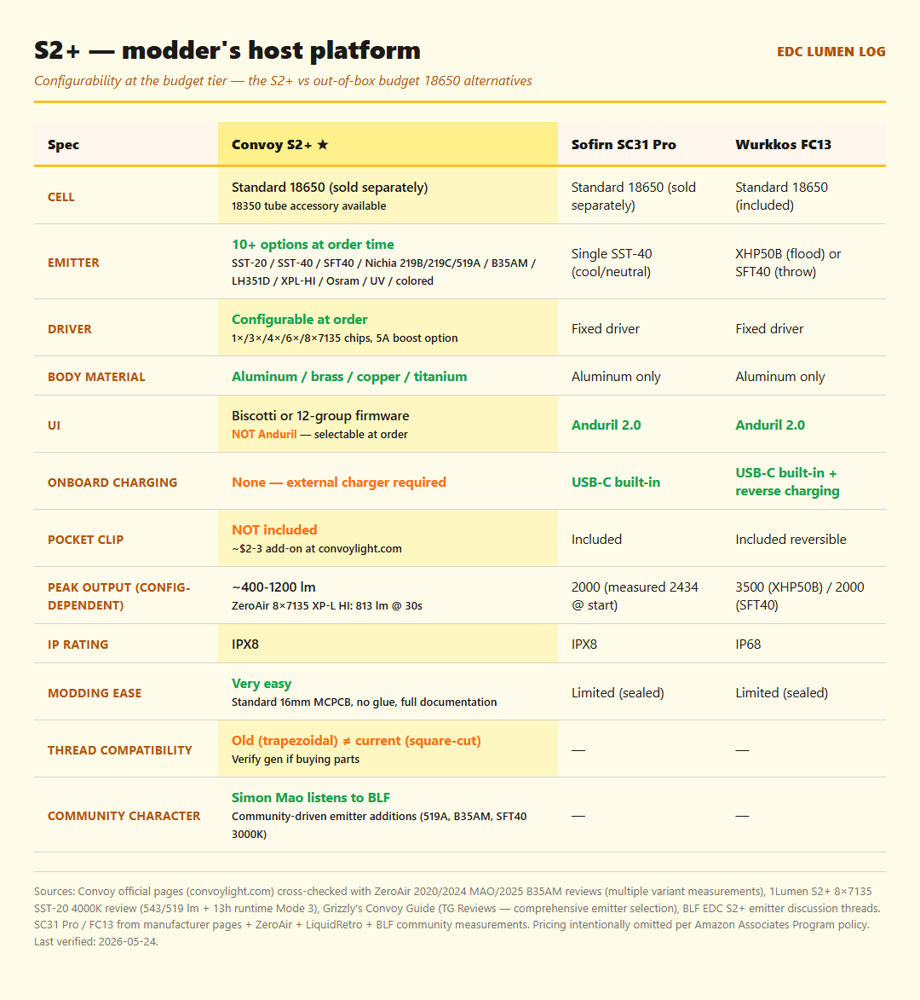
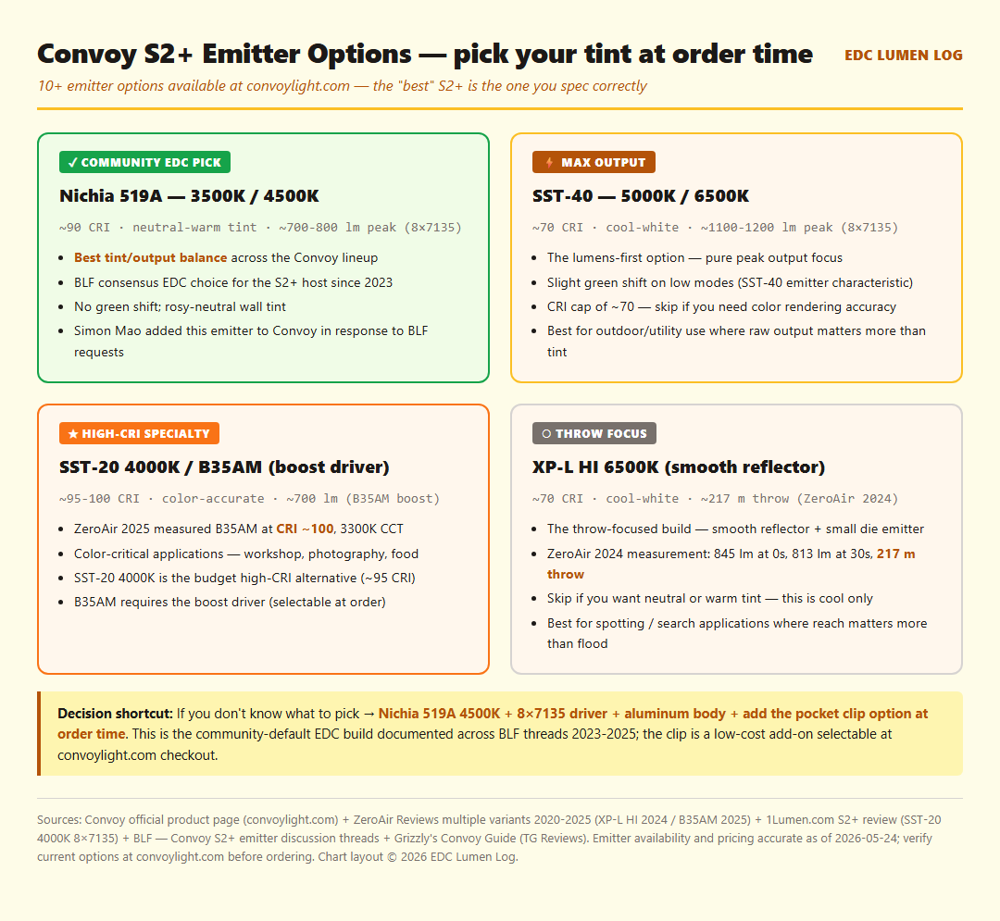
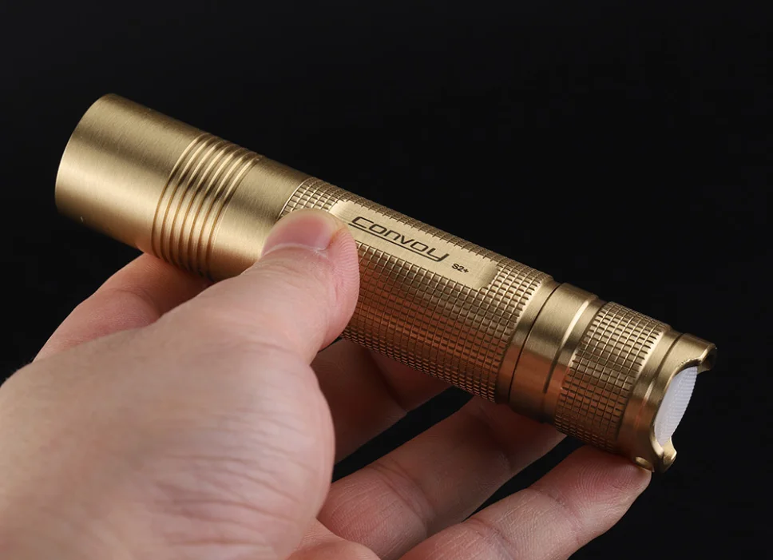

⏱ 8 min read Convoy · 18650 modder's host · Reviewed: 2026-05-24
The most documented modding platform in the budget flashlight world — pick your emitter, pick your driver, get the light you actually want at budget-tier pricing.

Image: Convoy S2+ (brass variant) via Convoy official product page (convoylight.com) (manufacturer CDN, downloaded for local hosting). Cropped/sized for review use under fair-use review/commentary.

| Spec | Value | Notes |
|---|---|---|
| Body material | 6061 aluminum (also brass, copper, titanium variants) | Material is selectable at order time. Aluminum is the standard EDC choice; brass/copper/titanium for collectors. |
| LED options (selectable) | SST-20, SST-40, SFT40, XPL-HI, Nichia 219C / 219B / 519A / B35AM, LH351D, Osram variants, UV, colored | 10+ emitter options at convoylight.com. Community-recommended for EDC: Nichia 519A in 3500K or 4500K — best tint/output balance. |
| Driver options (selectable) | 1×, 3×, 4×, 6×, or 8×7135 chips; 5A boost driver option; Biscotti or 12-group firmware | Driver determines current draw and peak output. 8×7135 = ~2.8 A draw / ~800-1200 lm depending on emitter. 4×7135 = ~1.4 A / efficiency-tuned. |
| Peak lumens (config-dependent) | ~400 lm (2×7135 Nichia 219B) to ~1200 lm (8×7135 SST-40) | ZeroAir 2024 (XP-L HI, 8×7135): 845 lm at 0s / 813 lm at 30s. 1Lumen (8×7135, SST-20 4000K): 543 lm at 0s / 519 lm at 30s. ZeroAir 2025 (B35AM, boost driver): 703 lm at 0s / 673 lm at 30s, CRI ~100. |
| Throw | ~150-217 m (config-dependent) | Smooth reflector + XP-L HI = 217 m. Orange peel reflector + Nichia 519A = ~150-180 m (smoother beam, less throw). |
| Dimensions | 118 mm × 24.1 mm body | Slim profile, classic budget-tier 18650 form factor. |
| Weight | ~75-85 g (without cell) | Varies by body material. ~120-135 g with cell installed. |
| IP rating | IPX8 (rated) | Community treats this with reasonable care — the S2+ is designed for disassembly, so real-world sealing depends on o-ring condition. |
| Battery | 1× 18650 (unprotected flat-top recommended; not included) | Standard 18650 — Samsung 30Q, Sony VTC6, LG HG2, Molicel P26A all work. Driver draw (max 2.8 A on 8×7135) is moderate; you don't need extreme high-drain cells. |
| Charging | None — external charger required | Single biggest functional gap vs the SC31 Pro and FC13. Plan for a dedicated 18650 charger (Nitecore SC4, Xtar VC4S, similar). |
| UI | Biscotti firmware (standard) or 12-group programmable firmware (selectable at order) | 4 standard modes (0.1% / 3% / 30% / 100%) + strobe/SOS/beacon. Mode memory. NOT Anduril — if you want Anduril, this isn't the right light (or swap drivers post-purchase). |
| Switch | Reverse mechanical clicky | Tail clicky allows mode changes while light is on + tail-standing + momentary-on. |
| Pocket clip | NOT included — sold separately (~$2-3 from convoylight.com) | Most consistent community complaint across 2020-2025 reviews. Add to your order at order time; otherwise it arrives separately. |
| Price | Check current price at the regional Amazon link in the "Where to buy" section below — or direct from convoylight.com | Per Amazon Associates Program policy, on-site pricing for the Amazon listing is sourced via Amazon's PA-API only — static prices are not displayed here. Convoy's direct sales (convoylight.com) are separate from the Amazon affiliate relationship. |
Methodology: see how these scores are assigned.


"Simon Mao added the Nichia 519A to the Convoy lineup because BLF members asked for it. That's the whole brand story — and it's why the S2+ has stayed relevant for years in a segment dominated by spec-chasing budget lights."
If the verdict resonated and you want to pick one up, here are the regional Amazon product links + the direct-from-Convoy option (recommended for full configurability). Once the Amazon Associates application for this site is approved, the URLs will be updated to include an affiliate tag.
What else you need: 1× 18650 cell (Samsung 30Q, Sony VTC6, Molicel P26A — not included; sold separately from Illumn non-affiliate), 1× 18650 external charger (Nitecore SC4 or Xtar VC4S — there is no onboard charging), and a pocket clip (~$2 add-on at convoylight.com order time). Avoid uncategorized "9800 mAh" cells — see the Ultrafire warning post.
Optional accessories: 18350 tube (~$3 from convoylight.com — converts to compact format), diffuser (~$2), magnetic tailcap, lighted switch, holster.
Affiliate disclosure: The Amazon links above are currently non-affiliate product links (the direct convoylight.com link is not part of any affiliate program — manufacturer direct). Once the Amazon Associates application for this site is approved, an affiliate tag will be inserted into the Amazon links. If/when you buy through an affiliate-tagged Amazon link, EDC Lumen Log earns a small commission at no extra cost to you. As an Amazon Associate I earn from qualifying purchases (statement preserved as required by Amazon Program Policies for the participation framework). Reviews are not paid or sponsored — see Methodology. (PR — 景品表示法準拠 / アフィリエイトタグは承認後に挿入)